Introduction to Bayesian Inference:
The Beta-Binomial Model
Examples from this lecture are mainly taken from the Bayes Rules! book and the new functions are from the bayesrules package.
Bayesian Inference
Bechdel Test
Alison Bechdel’s 1985 comic Dykes to Watch Out For has a strip called The Rule where a person states that they only go to a movie if it satisfies the following three rules:
the movie has to have at least two women in it;
these two women talk to each other; and
they talk about something besides a man.
This test is used for assessing movies in terms of representation of women. Even though there are three criteria, a movie either fails or passes the Bechdel test.
Let \(\pi\) be the the proportion of movies that pass the Bechdel test.
The Beta distribution is a good fit for modeling our prior understanding about \(\pi\).
We will utilize functions from library(bayesrules) to examine different people’s prior understanding of \(\pi\) and build our own.
The Optimist
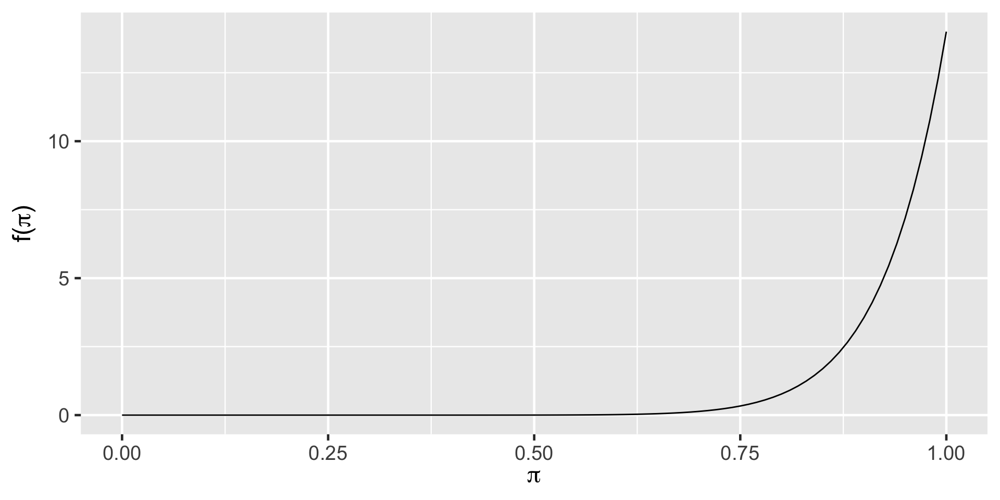The Clueless
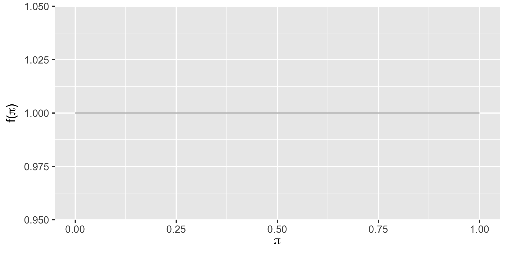The Feminist
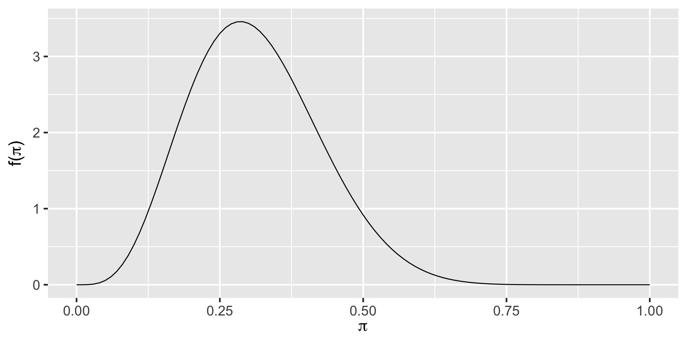Vocabulary
Informative prior: An informative prior reflects specific information about the unknown variable with high certainty (ie. low variability).
Vague (diffuse) prior:
A vague or diffuse prior reflects little specific information about the unknown variable. A flat prior, which assigns equal prior plausibility to all possible values of the variable, is a special case.
Quiz question
Which of these people are more certain (i.e. have a highly informative prior)?
- The optimist
- The clueless
- The feminist
Plotting Beta Prior
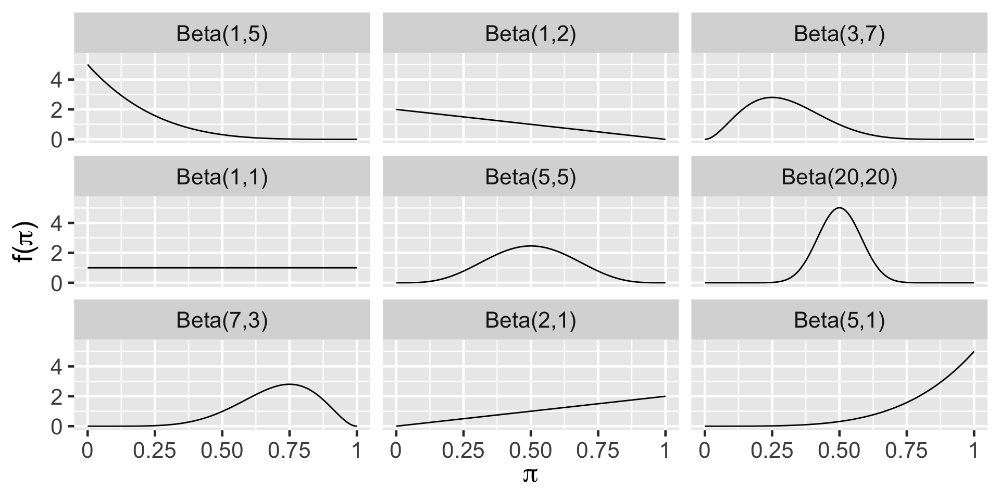Your prior
What is your prior model of \(\pi\)?
Utilize the summarize_beta() and plot_beta() functions to describe your own prior model of \(\pi\). Make sure to note this down. We will keep referring to this quite a lot.
Data
We are taking a random sample of size 20 from the bechdel data frame using the sample_n() function.
The set.seed() makes sure that we end up with the same set of 20 movies when we run the code. This will hold true for anyone in the class. So we can all reproduce each other’s analyses, if we wanted to. The number 84735 has no significance other than that it closely resembles BAYES.
Data
Rows: 20
Columns: 3
$ year <dbl> 2005, 1983, 2013, 2001, 2010, 1997, 2010, 2009, 1998, 2007, 201…
$ title <chr> "King Kong", "Flashdance", "The Purge", "American Outlaws", "Se…
$ binary <chr> "FAIL", "PASS", "FAIL", "FAIL", "PASS", "FAIL", "FAIL", "PASS",…The Optimist
The Optimist
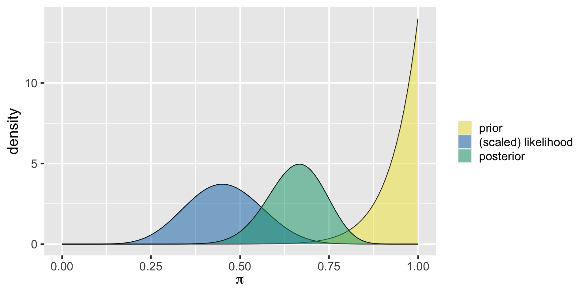The Clueless
The Clueless
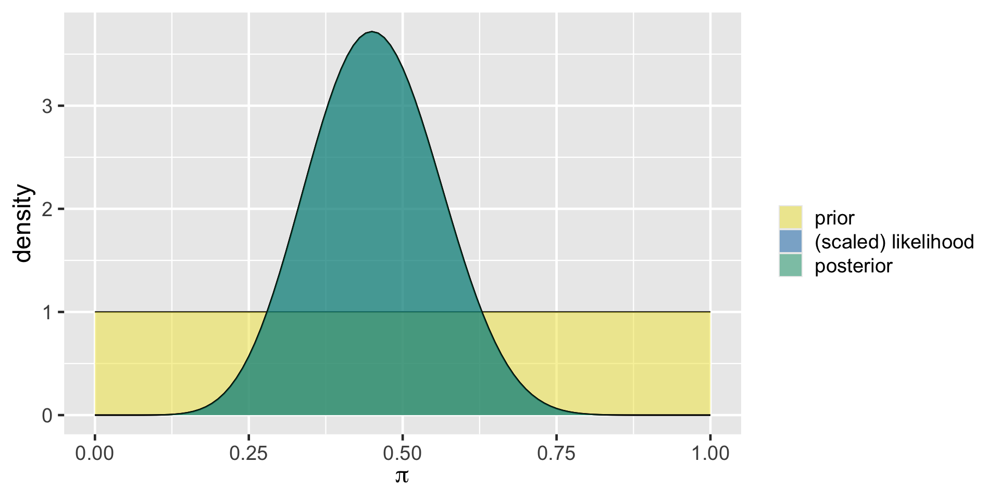The Feminist
The Feminist
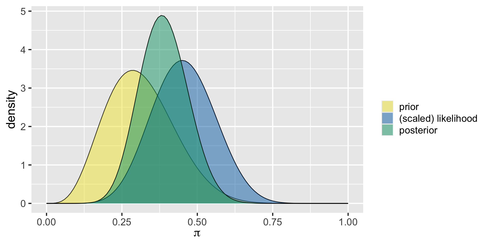Comparison
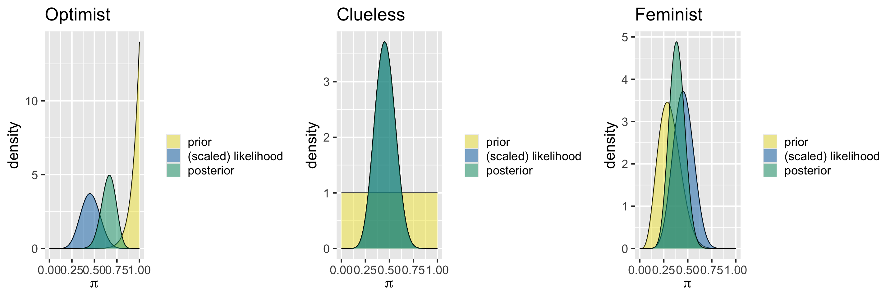Your Posterior
Utilize summarize_beta_binomial() and plot_beta_binomial() functions to examine your own posterior model.
Balancing Act of Bayesian Analysis
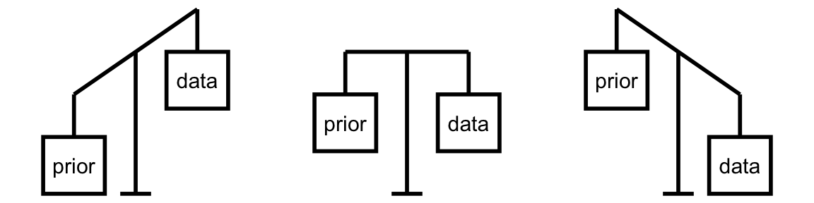In Bayesian methodology, the prior model and the data both contribute to our posterior model.
Different Data, Different Posteriors
Morteza, Nadide, and Ursula – all share the optimistic Beta(14,1) prior for \(\pi\) but each have access to different data. Morteza reviews movies from 1991. Nadide reviews movies from 2000 and Ursula reviews movies from 2013. How will the posterior distribution for each differ?
Morteza’s analysis
# A tibble: 2 × 2
binary n
<chr> <int>
1 FAIL 7
2 PASS 6[1] 0.4615385Morteza’s analysis
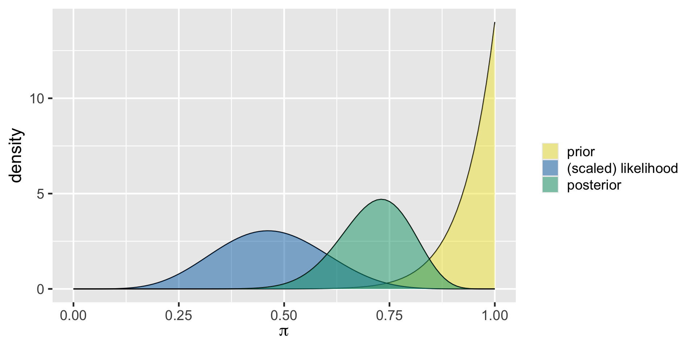Nadide’s analysis
# A tibble: 2 × 2
binary n
<chr> <int>
1 FAIL 34
2 PASS 29[1] 0.4603175Nadide’s analysis
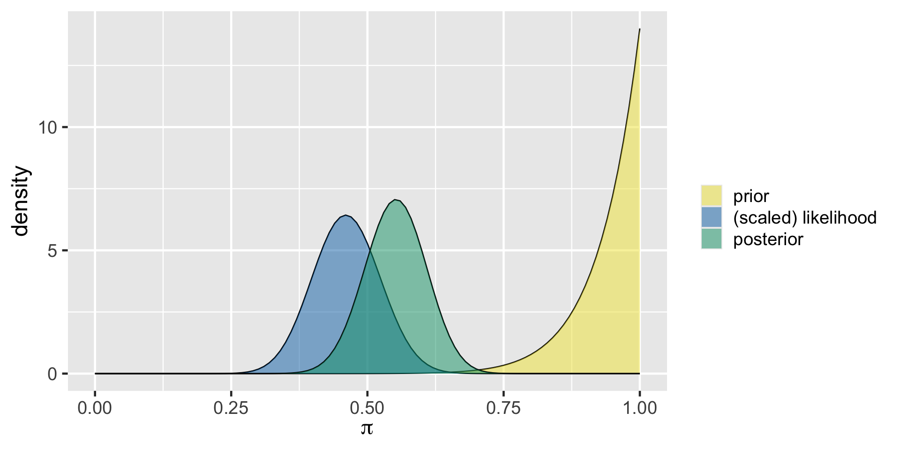Ursula’s analysis
# A tibble: 2 × 2
binary n
<chr> <int>
1 FAIL 53
2 PASS 46[1] 0.4646465Ursula’s analysis
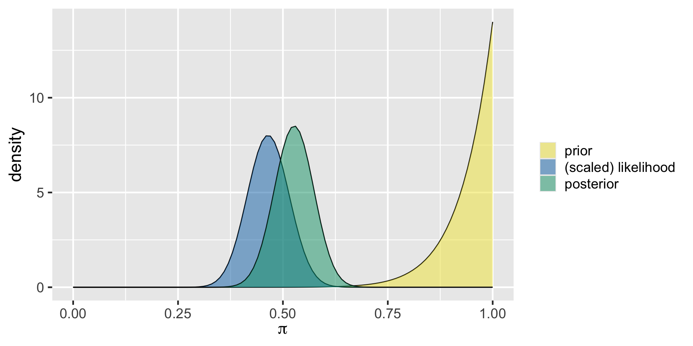Summary
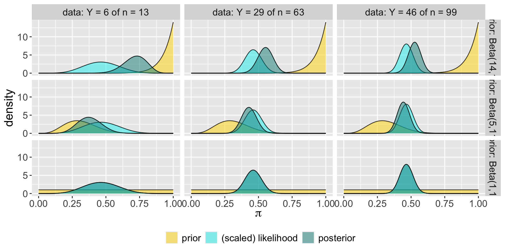priors: Beta(14,1), Beta(5,11), Beta(1,1)